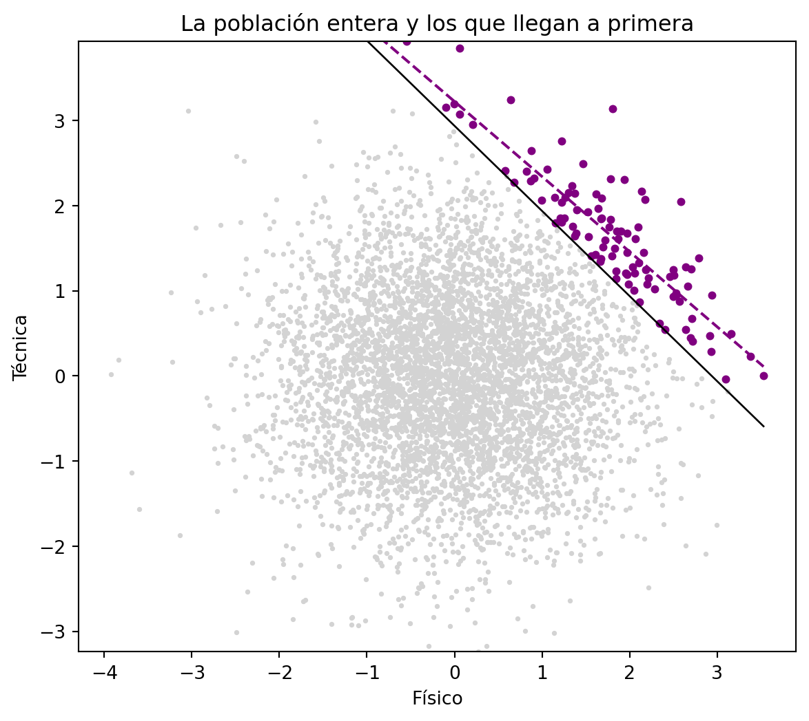

import numpy as np
np.random.seed(42)
n = 5_000
tecnica = np.random.normal(size=n)
fisico = np.random.normal(size=n)
np.corrcoef(tecnica, fisico)[0, 1].round(3)-0.002Claude
15 de septiembre de 2026
Coges a los futbolistas de primera división y les mides dos cosas: técnica y físico.
Salen correlacionados en negativo. Los más fuertes son los menos técnicos.
Suena a teoría de bar. El que se pasa la vida en el gimnasio descuida el balón. Tiene su lógica hasta que vas a la población general y buscas la misma correlación. Ahí no está. En el fútbol de barrio, la técnica y el físico se ignoran mutuamente.
Entre los de primera, se odian.
Y a los datos no les ha pasado nada raro. Les ha pasado una cosa concreta que tiene nombre.
Para llegar a primera hace falta mucho de algo.
Si eres un portento físico te fichan aunque el control te salga regular. Si eres un fenómeno con el balón te fichan aunque pierdas todos los duelos. Lo que no pasa es que llegues sin ninguna de las dos.
Piensa entonces en quién compone esa lista. Los que van sobrados de las dos cosas existen, pero son cuatro. La mayoría entró por una sola puerta.
Dentro del grupo, saber que un jugador va justo de físico te dice algo. Tiene que ir sobradísimo de técnica, porque de otra forma no estaría ahí.
Ahí tienes la correlación. La ha puesto el criterio de selección.
Joseph Berkson contó esto en 1946 revisando historiales de hospital. Dos enfermedades sin relación ninguna entre sí aparecían asociadas entre los ingresados. El motivo: cada una, por su cuenta, ya era razón suficiente para ingresar. Entre los ingresados, librarte de una te dejaba con más papeletas de tener la otra.
A la variable por la que condicionas —jugar en primera, estar ingresado— se la llama collider. Es hija de las otras dos. Las dos flechas apuntan hacia ella.
Genero una población entera. Técnica y físico independientes por construcción: los saco por separado y no se miran.
-0.002Cero, como tenía que ser.
Ahora el filtro. Sumo las dos cualidades y me quedo con el 2% de arriba. Es un criterio generoso: da igual de dónde venga el talento mientras haya mucho.
-0.879No he tocado ninguna de las dos variables. Solo he mirado a un subgrupo.
En el gráfico se ve de dónde sale.
import matplotlib.pyplot as plt
umbral = np.quantile(talento, 0.98)
x = np.array([fisico.min(), fisico.max()])
pendiente, corte = np.polyfit(fisico[primera], tecnica[primera], 1)
fig, ax = plt.subplots(figsize=(7, 6))
ax.scatter(fisico, tecnica, s=3, color="lightgrey")
ax.scatter(fisico[primera], tecnica[primera], s=12, color="#800080")
ax.plot(x, umbral - x, color="black", linewidth=1)
ax.plot(x, corte + pendiente * x, color="#800080", linestyle="--", linewidth=1.5)
ax.set_xlabel("Físico")
ax.set_ylabel("Técnica")
ax.set_ylim(tecnica.min(), tecnica.max())
ax.set_title("La población entera y los que llegan a primera")
plt.show()
La nube gris es redonda. Ahí dentro no hay relación ninguna.
La recta negra es el corte. Lo que queda por encima es un triángulo, una esquina. Y en una esquina solo cabe una cosa: lo que subes por un lado lo bajas por el otro.
Filtrar es una forma de condicionar. Hay otra que usas mucho más y que no parece lo mismo. Meter la variable en el modelo.
Ajusto la técnica en función del físico, con la población entera.
coeficiente: -0.002 p-valor: 0.898Nada, como esperabas.
Ahora hago lo que hace todo el mundo: añadir una variable más porque está ahí y porque cuesta cero. Añado si el jugador llegó a primera.
coeficiente: -0.065 p-valor: 0.000El coeficiente del físico se ha ido a negativo. Con un p-valor que te invita a contarlo en la reunión.
Es un coeficiente pequeño, y se entiende: primera división son cien jugadores de cinco mil, así que el estropicio vive en el 2% de las filas. Si el filtro fuera menos exigente, el 20% de arriba pongamos, el coeficiente se iría a −0,32.
He añadido una columna a la matriz. El efecto que ha salido es invención del modelo.
En el blog hay unos cuantos posts sobre el caso contrario. En las relaciones espurias y en los experimentos con multicolinealidad el problema era una variable que faltaba. La metías en el modelo y el coeficiente falso se venía abajo.
Aquí funciona al revés. La variable sobra, la metes, y el coeficiente falso aparece.
Lo incómodo es que desde dentro las dos situaciones se ven igual. En las dos, añadir una variable mueve el coeficiente de otra. En las dos, el modelo nuevo ajusta mejor que el viejo. Y el R² sube, porque llegar a primera explica de verdad parte de la técnica.
Ningún R², ningún p-valor y ningún VIF te van a avisar de que has metido un collider. El diagnóstico sale limpio. El modelo está encantado.
La diferencia entre un caso y otro está en por dónde van las flechas. Si la variable causa a las otras dos, controlar por ella te arregla el modelo. Si la causan las otras dos, te lo estropea.
Esa dirección no viene en el fichero. La pones tú, con lo que sepas del mundo del que salieron los datos.
“Mete todas las variables que puedas, por si acaso” es de los consejos que más se repiten y más caros salen. Cada columna que añades es una decisión sobre la estructura causal, la tomes a conciencia o la tomes por acumulación.
Y hay un caso peor, que además es el habitual. El collider no lo metes tú. Ya venía puesto.
Tus datos son clientes que compraron. Pacientes que ingresaron. Empleados que siguen en la empresa. Usuarios que llegaron al final del formulario.
Alguien filtró por el resultado antes de que tú abrieras el fichero. Todas las correlaciones que encuentres ahí dentro son correlaciones dentro de una esquina.